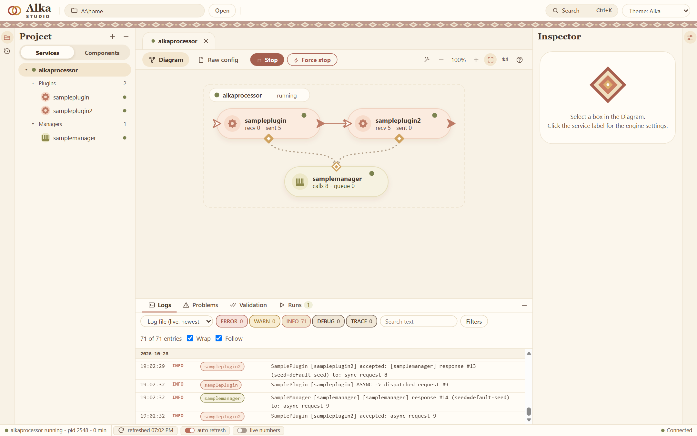
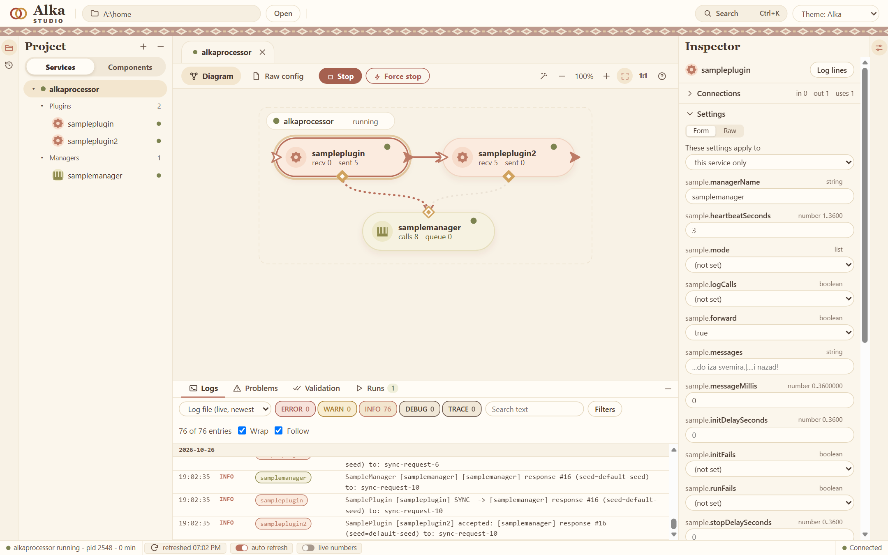

Alka runs Java plugins from config files, and shows them in a diagram.
You write small components as plain jars. A config file says which ones to load and how they are connected. Alka Studio draws that as a diagram, edits the settings, starts and stops the service and shows its log.
Needs Java 25. It has only been tried on Windows. 0.1.0 is the first public version, so things can still change.

How it works
A plugin does the work: it reads something, answers something, calls something, and sends events on to other plugins.
A manager holds something that plugins share, like a connection or a cache. Which manager a plugin gets is decided in the config, not in the code.
Each of them is a jar. A service is a few lines of config that name the jars and connect them. The settings of a component are declared on its class, and the Studio makes a form from them:
@AlkaSettings(description = "Greets its manager.", value = {
@Setting(key = "hello.intervalSeconds", type = SettingType.NUMBER,
defaultValue = "2", min = "1", max = "3600",
description = "Seconds between two greetings.")
})
public class HelloPlugin extends ObjectPlugin { /* init, run, stop, accept */ }The Studio
Drag a jar onto the diagram, draw a line between two boxes, change a setting, press Start. The Studio writes the config and keeps the older versions of every file. It checks the service before it starts, and shows the log with filters and the numbers of every box while it runs.

Try it
- Download
alka-0.1.0.zipfrom the latest release and unzip it. - Start
studio.bat(./studio.shon Linux and macOS). Select the service alkaprocessor and press Start. That is the demo: one plugin talks to a manager and passes the answer to a second plugin. - To make your own, you need Maven 3.9. This makes a project with a manager, a plugin and a service:
mvn archetype:generate -DarchetypeGroupId=com.alkadev \ -DarchetypeArtifactId=alka-sample-archetype -DarchetypeVersion=0.1.0 - Build it and copy it into the
homefolder of the package. It shows up in the Studio:cd myalka mvn install mvn package alka:deploy -Dalka.home=<the folder "home" of the package>
More in Your first plugin and How Alka works.
License
The API, the Maven plugin, the project generator and the samples are Apache 2.0. They are on GitHub and on Maven Central (com.alkadev).
The engine and the Studio come as a package and are free for noncommercial use (PolyForm Noncommercial 1.0.0, with a few added terms). For commercial use, open an issue and ask.